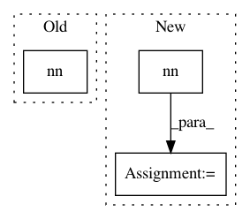

56156540d33f329ebf271ac9313ca723e649c0a2,kraken/blla.py,,segment,#Any#Any#Any#Any#,44
Before Change
batch, channels, height, width = nn.input
transforms = generate_input_transforms(batch, height, width, channels, 0, valid_norm=False)
o = nn.nn(im)
o = segmentation.denoising_hysteresis_thresh(o, 0.4, 0.5, 0)
baselines = segmentation.vectorize_lines(o)
After Change
transforms = dataset.generate_input_transforms(batch, height, width, channels, 0, valid_norm=False)
with torch.no_grad():
o = model.nn(transforms(im).unsqueeze(0))
o = F.interpolate(o, size=im.size[::-1])
o = segmentation.denoising_hysteresis_thresh(o.detach().squeeze().cpu().numpy(), 0.4, 0.5, 0)
baselines = segmentation.vectorize_lines(o)
polygons = segmentation.calculate_polygonal_environment(im, baselines)
return polygons
In pattern: SUPERPATTERN
Frequency: 3
Non-data size: 3
Instances
Project Name: mittagessen/kraken
Commit Name: 56156540d33f329ebf271ac9313ca723e649c0a2
Time: 2019-06-27
Author: mittagessen@l.unchti.me
File Name: kraken/blla.py
Class Name:
Method Name: segment
Project Name: asyml/texar
Commit Name: f5a2b259b26bc173bf854cf5c8f306a1c21f15fe
Time: 2017-11-29
Author: 695742297@qq.com
File Name: txtgen/modules/networks_test.py
Class Name: FeedForwardNetworkTest
Method Name: test_feedforward
Project Name: rusty1s/pytorch_geometric
Commit Name: 4c0a9a18d780fc62b8606437bbc15d1a68f882ef
Time: 2019-04-29
Author: matthias.fey@tu-dortmund.de
File Name: torch_geometric/nn/conv/gin_conv.py
Class Name: GINConv
Method Name: forward